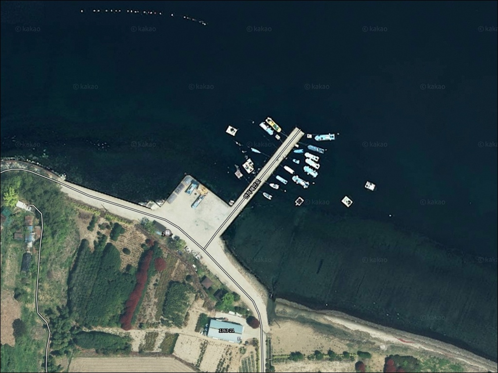
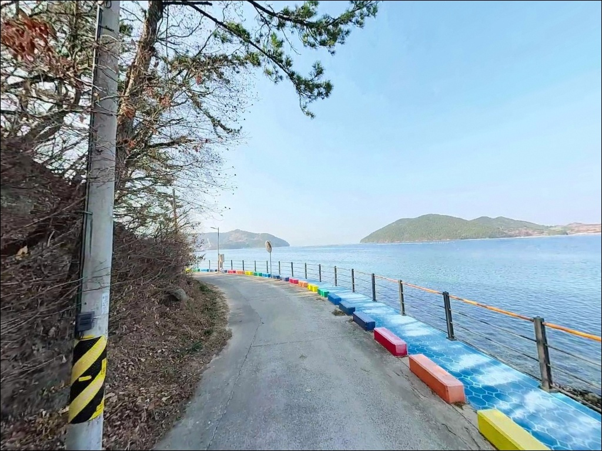
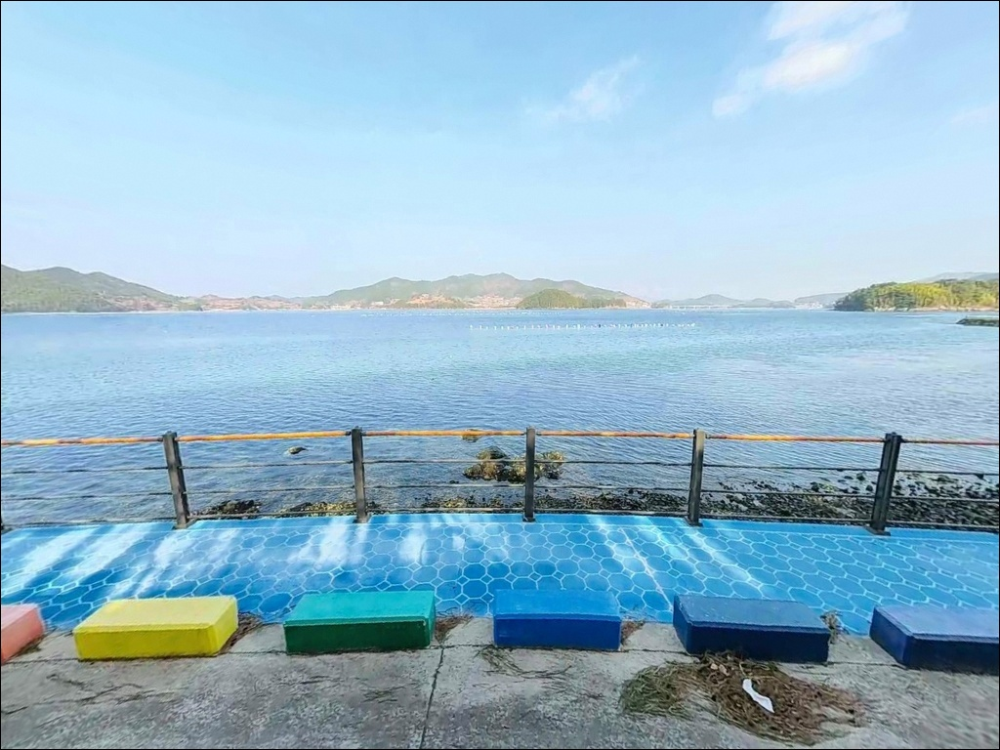
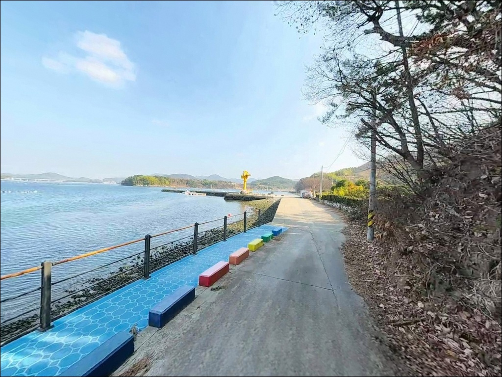
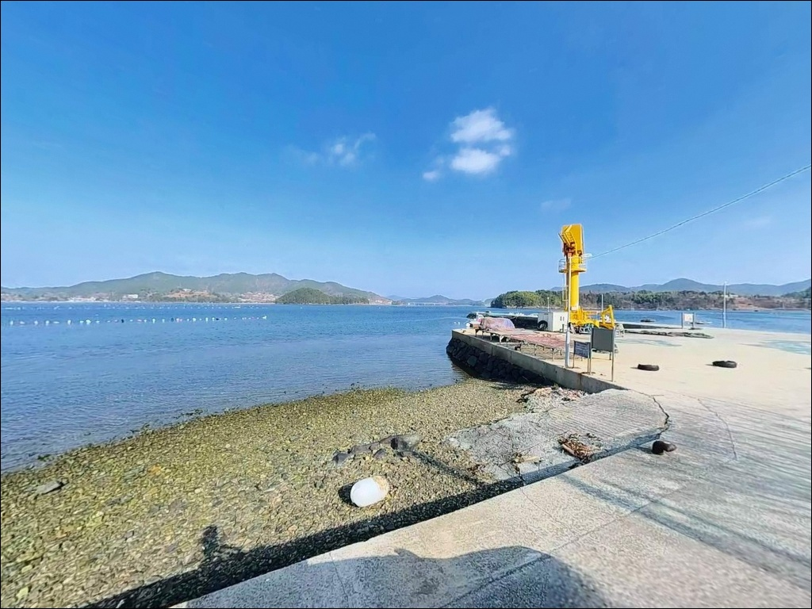
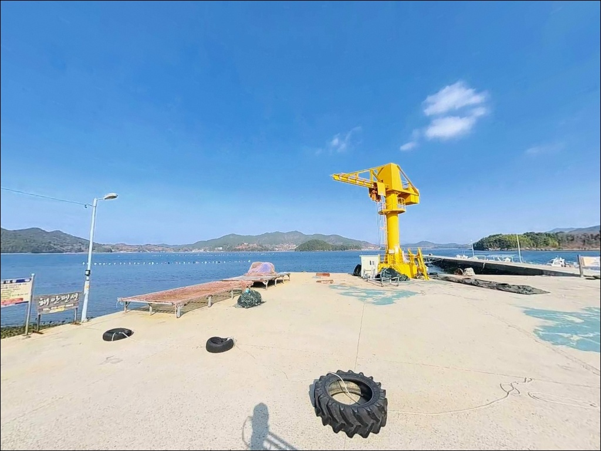
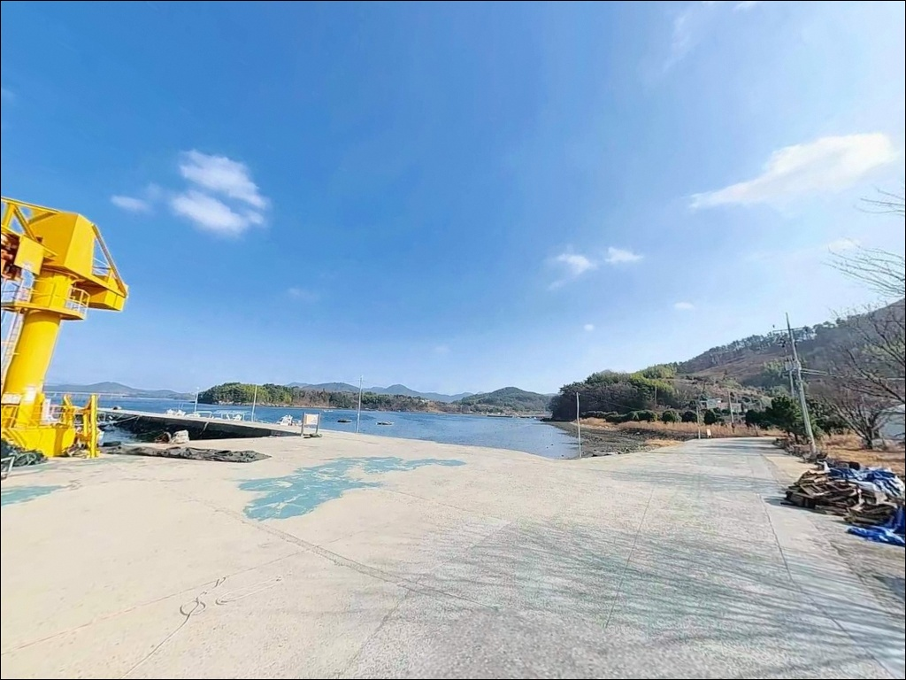
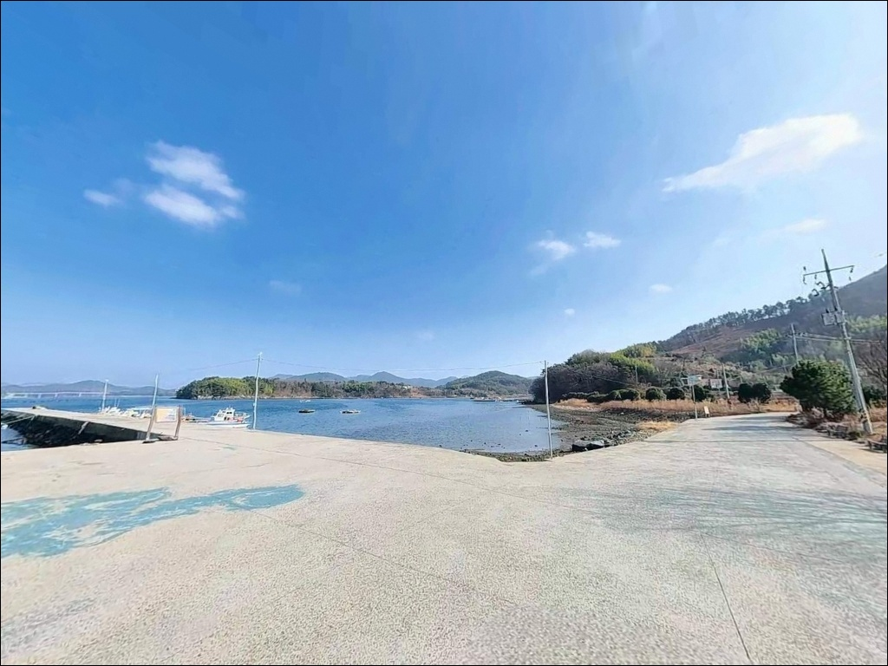
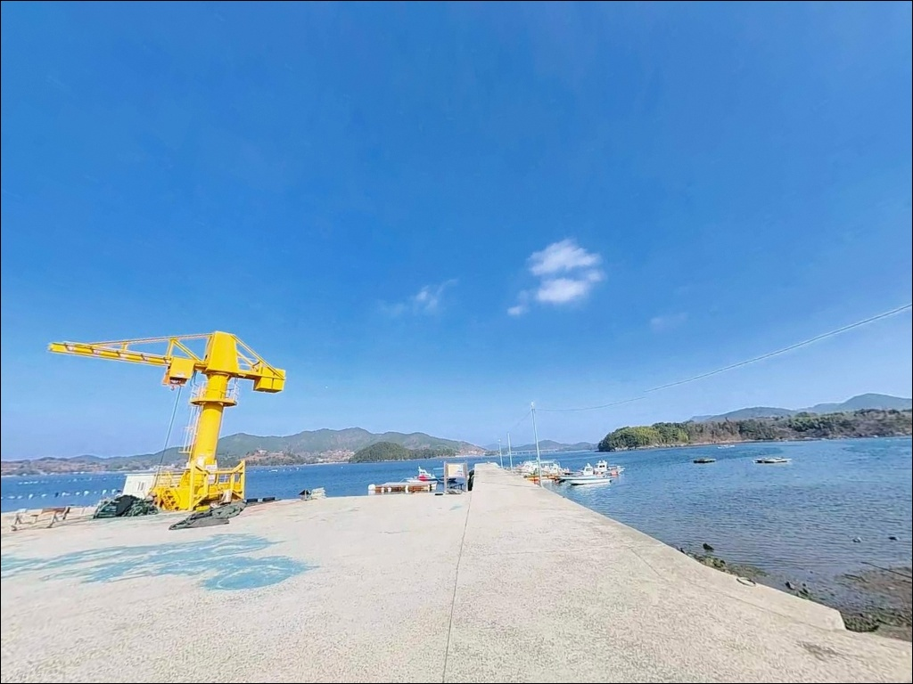

외항 조류 기대하면 빈 채비만 거두는 거제 덕곡리선착장 들물 원투낚시
이 페이지에는 광고(제휴 링크 포함)가 있으며, 광고 링크를 통해 구매하면 운영자가 판매 수익 또는 수수료를 받을 수 있습니다. 포인트 사진: 카카오맵 스카이뷰·로드뷰. 이 페이지의 지도·사진 이미지는 카카오맵의 실제 서비스 이미지와 다를 수 있습니다.


포인트 안내
덕곡리선착장
경남 거제시 하청면 덕곡리 28-9
칠천해협 내측 내만형 포인트에서
조류 빠른 외항을 기대하고 루어를 던지면
반응 없는 빈 채비만 거둬들이게 됩니다.
이 일대 해역은 잔잔한 수면과 완만한 수심이
특징인 생활낚시 구조로,
낚시 스타일 선택이 조과의 출발점입니다.
경남 거제시 하청면 덕곡리,
칠천도와 마주 보는 해안선 위에 자리한
덕곡리선착장은 아직 온라인에
이름이 많이 오르지 않은 소형 시설입니다.
공식 어항 명칭은 없으나
선착장 구조와 전방 해협 수역이
생활낚시와 조용한 단기 체류에
맞는 조건을 갖추고 있습니다.
이 글은
덕곡리선착장의 진입 환경, 차박 여건,
낚시 방식 적합성에 집중합니다.
조황 단정이나 특정 어종 보장은
이 글의 범위에 포함되지 않습니다.

1. 진입 동선과 포인트 접근성
덕곡리선착장은 하청면 연안도로를 따라
접근하는 구조입니다.
해안선 따라 이어지는 진입로는
1차선~1.5차선 수준의 포장도로로,
승용차·소형 SUV 기준으로는
진입에 큰 어려움이 없는 편입니다.
대형 캠핑카나 장비를 갖춘 대형 차량이라면
출발 전 위성지도로 진입로와
회차 공간을 반드시 먼저 확인해야 합니다.
선착장 앞 회차 공간은 소형 공터 수준으로,
방향 전환이 어려운 대형 차량은
진입 전 후진 진출 여부도 함께 판단해 두는 것이
안전합니다.
주차는 선착장 진입 직전 도로변 공터를
활용하는 방식이 일반적입니다.
1~3대 수준의 소규모 공간이며,
어선 접안 상황에 따라 이용 가능 면적이
달라질 수 있습니다.
어선 이동 동선을 막지 않는 자리가
기본 주차 원칙입니다.

2. 차박 환경과 야간 체류 여건
덕곡리선착장 일대는
칠천해협 내측 해안이라 파도 소음이 적고
바람 영향도 외항에 비해 완만한 편입니다.
야간 차량 통행이 거의 없는 어촌마을 구조로
소음 환경은 비교적 조용한 편입니다.
주차 공간이 협소하고
민가와 거리가 가까운 구조라
차박을 메인 목적으로 삼기에는
공간 확보 면에서 제약이 있습니다.
낚시를 마치고 조용히 머무는
단기 체류 형태가 이 포인트에 어울리며,
장박이나 취사를 중심에 두는 차박은
마을 주민 생활권을 고려해 자제하는 것이
기본 매너입니다.
가로등 수가 많지 않은 구조라
낚시 자리까지 빛이 닿지 않을 수 있습니다.
개인 조명 장비는 필수이며,
야간에는 선착장 석축과
미끄러운 슬립웨이(선박 경사로) 접근을
반드시 피해야 합니다.


3. 주변 편의시설 및 인프라 현황
덕곡리선착장 반경 1km 이내에는
편의점이나 낚시 소품을 구입할 시설이 없습니다.
덕곡마을 보건진료소가
마을 안쪽에 인접해 있는 정도이며,
식수·얼음·미끼·연료는
출발 전 완전 자급 체제로 준비하는 것이
현실적입니다.
차량으로 약 10분 이동하면
하청면 중심 생활권에 닿을 수 있습니다.
GS25 거제하청점이 반경 3km권 내에 있으며,
칠천도 방향으로 이동하면
편의점·식당 등 기본 인프라를
이용할 수 있는 편입니다.
부족한 소품이 생겼을 때의 이동 동선을
출발 전 미리 정해두는 것이 좋습니다.

4. 이 포인트에서 낚시 전 반드시 챙겨야 할 준비사항
덕곡리선착장 방문 전 가장 먼저 확인할 것은
물때입니다.
내만형 수역이라 조류가 완만한 편이나,
들물 전후에 수심이 안정되고
생활어종의 활성도가 올라가는 패턴이
이 일대 해역의 기본 흐름입니다.
바다타임에서 덕곡리 기준
들물 시작 시각을 먼저 확인하고
출발 시각을 맞추는 것이 기본 전략입니다.
내만형 소형 선착장이라
밑걸림은 비교적 적은 편이지만,
선착장 석축 끝단 부근은 암초 구간이 형성되어
채비 손실이 발생할 수 있습니다.
여분 채비는 넉넉히 준비하는 편이 좋고,
출조 전에는 거제 하청면 일대 조황 검색을
먼저 해보시는 것이 방문 전 필수 루틴입니다.
마을 선착장 구조상 어선 계류 로프와
어구가 선착장 주변에 놓여 있습니다.
채비가 어선 로프에 걸리지 않도록
투척 방향을 먼저 확인하고,
슬립웨이 구간은 이끼가 낄 수 있어
진입을 금하는 것이 안전합니다.
구명조끼 착용은 야간 여부와 무관하게 필수입니다.

5. 지형 기반 낚시 여건 분석
덕곡리선착장의 핵심 지형 조건은
칠천해협 내측에 형성된 내만 구조입니다.
칠천도가 외해 파도를 차단하는 역할을 하여
수면이 바람 없는 날 호수처럼 잔잔하며,
조류 흐름도 외항 방파제에 비해 완만합니다.
선착장 발판 하부는
수심 2~4m 내외 구간이 형성되고,
선착장 끝단 쪽으로 점진적으로 깊어지는
구조입니다.
바닥은 뻘과 모래가 혼합된 구성으로,
선착장 끝단 외측 부근에 암초 지형이
일부 형성되어 있습니다.
내만 특성상 대형 회유어가 상시 유입되는
구조는 아니며,
바닥층 체류형 생활어종 위주의
안정적 패턴이 형성되는 포인트입니다.
선착장 외측 끝단이 수심이 가장 확보되는
핵심 구간입니다.
야간에는 선착장 가로등 아래로
불빛을 따라 소형 어종이 모이는 패턴이
이 일대 내만 해역에서 공통으로 나타납니다.
조명 아래 석축 부근을
집중 탐색하는 방식이 이 포인트에 맞습니다.
출조 전에는 칠천해협 일대 조황 검색을
반드시 먼저 확인하시기 바랍니다.


6. 포인트에 어울리는 낚시 스타일
이 포인트에서 지형 조건과 가장 잘 맞는
낚시 방식은 원투낚시입니다.
완만한 바닥과 내만형 잔잔한 수면이
채비 안정성과 바닥층 탐색에 유리한
환경을 만들어줍니다.
선착장 끝단에서 전방 30~50m를 노리며
들물 전후 타이밍에 집중하는 방식이
이 포인트의 기본 공략법입니다.
볼락 라이트게임도 야간에 노려볼 만합니다.
선착장 가로등 아래 석축 발밑이
볼락이 모이기 좋은 구조입니다.
소형 지그헤드에 웜 채비를 달아
석축 경계를 천천히 탐색하는 방식이 유효하며,
11월 이후 수온이 내려가는 시기에
씨알이 올라오는 경향이 있습니다.
에깅도 이 해역에서 시도해 볼 만합니다.
에깅이란 갑오징어·무늬오징어를 대상으로
에기(인조 미끼)를 사용하는 루어낚시 방식입니다.
칠천해협 일대는 가을 시즌에
전역의 선착장에서 갑오징어 에깅이
성립하는 해역 패턴을 보입니다.
가로등 아래 해질 무렵부터
다운샷 에기 채비로 전방을 탐색하는 방식이
이 포인트에 맞습니다.
찌낚시도 잔잔한 내만 수면을 활용하기 좋은
방식입니다.
선착장 끝단 수심 변화 구간에서
조류가 완만하게 흐르는 들물 구간에
자리를 잡으면 수면 컨트롤이
쉬운 편입니다.

7. 대안 포인트와 플랜 B 동선
덕곡리선착장 조건이 기대에 못 미칠 경우
가장 먼저 이동할 대안은
같은 덕곡마을 내 인접 방파제입니다.
약 400m 거리로 동일 해역 조건을 유지하면서
선착장보다 방파제 구조가 길어
자리 선택의 폭이 넓습니다.
칠천대교를 건너 칠천도로 이동하면
해협권 안에서 이미 알려진
여러 방파제 포인트를 만날 수 있습니다.
덕곡리선착장보다 수심이 깊고
포인트 선택지가 다양해
낚시 여건이 기대 이하일 때
칠천도권을 플랜 B로 묶어두는 동선이
이 권역에서 효율적입니다.
칠천대교 경유 이동 거리는
6~8km 수준입니다.
차박 여건이 부족하다고 판단될 경우
칠천대교 서쪽 1.5km 거리의
옥계오토캠핑장을 대체 숙영 후보로
고려할 수 있습니다.
주차·전기·화장실·샤워실이 갖춰진 시설로
낚시와 숙영을 분리하는 구성이
필요할 때 활용하기 좋습니다.

조용한 해협 안쪽,
덕곡리선착장은 아는 사람만
찾아가는 포인트입니다
원투낚시나 볼락 라이트게임을 즐기는 낚시인이라면
덕곡리선착장의 내만 지형 조건은
조용하게 집중할 수 있는
구조를 갖추고 있습니다.
잔잔한 수면, 완만한 바닥층,
야간 가로등 아래 석축 패턴이
생활낚시 위주 낚시인에게 잘 맞는 자리입니다.
반면 대형 회유어나 조류가 빠른 포인트를
기대하고 방문한다면
이 포인트의 내만형 조건이
기대와 맞지 않을 수 있습니다.
들물 물때 확인, 자급 준비, 진입로 사전 점검,
이 세 가지를 갖추고 간다면
조용한 거제 내만에서의 낚시를
온전히 즐길 수 있는 포인트입니다.
편의시설 없는 작은 어촌 선착장에서
칠천해협을 바라보며 낚시 채비를 펼치는 시간은,
물때 하나 맞추는 것으로 달라지는
차박 낚시 여행의 조용한 매력을 보여줍니다.